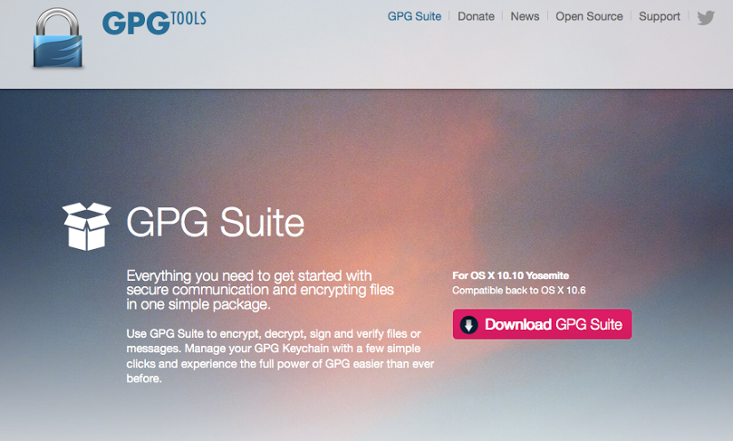
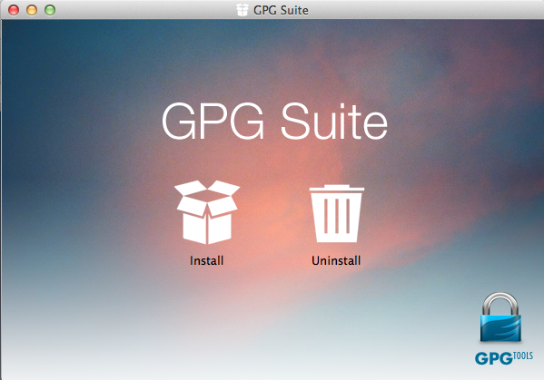
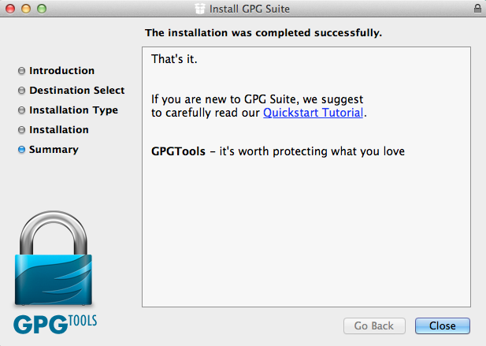
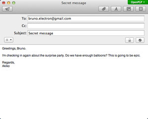
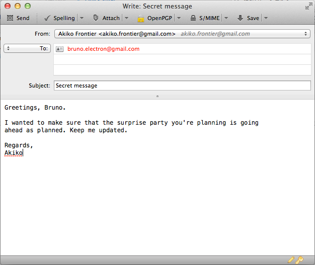

Mac Manual
Stuff you'll need to complete this manual:
- GPG Suite
- Apple Mail
- An internet connection
- a computer running Mac OS X
- an email account
- Key2myHeart USB bracelet.
Time required: 30-60 minutes
Follow these steps:
This guide will show you how to use PGP with an Apple Mac (but not iPad or iPhone), with either the Mac's built-in Mail program, or with Mozilla Thunderbird, a popular alternative email program.
You can't currently use PGP directly with a web email service like Gmail, Hotmail, Yahoo! Mail, or Outlook Live. You can still use your webmail address; you’ll just have to configure it with the Mail or Thunderbird programs on your computer.
Note that your friends will need to be using PGP-compatible software for it to work. It takes two to crypto :-)
Installing GPGTools on your Mac
PGP is an open standard, which means that more than one piece of software can use it. The software we're going to use for PGP is called the GPG Suite, from GPG Tools, because it works on Macs, is free for anyone to use, and it's open source: the underlying source code is available for anyone to check for bugs and backdoors.
Once the GPG Suite is installed, you can set up your keys for the first time, and then enable PGP on Apple Mail and, optionally, Thunderbird.
Step 1: Install the program
First, go to https://www.gpgtools.org/ in your browser and choose "Download GPG Suite". Or use the installer on your USB bracelet from the 'Software' folder.

You'll end up with a disk image that you can click on to install the software. If you're not accustomed to installing third-party software on your computer, ask a nearby Mac expert – this is a step most techies can help you with, even if they don't know PGP or encryption
Clicking on install will give you a list of tools that will be added to your computer.

What exactly am I installing here?
These are tools will mostly work behind the scenes so that more than one program on your Mac can use PGP. Think of them as programs that other programs can use, rather than applications that you will use directly. GPGMail lets Apple Mail send and read PGP emails, GPG Keychain Access lets you keep your private and public keys in the same manner as you can save other passwords on your Mac. GPGServices optionally adds a feature to OS X to let you use PGP directly in programs other than email (for instance, in a word processor). GPGPreferences is for changing PGP settings in Apple's preferences. Finally, MacGPG2 is the basic tool that any program needs to use to do encryption or signing.
Click "Continue" to install GPG Suite.

When the installation is complete, you need to drag the already generated key to the right place on your Mac.
Configuring Apple Mail
Mail Account Setup Auto-detect
When you're composing a new message, there are two icons just beneath the Subject field. There's a padlock (encrypt email) and a star (digitally sign email). If the padlock is closed it means this email will be encrypted, and if the star has a check in it, it means this email will be digitally signed.
Sending PGP Signed or Encrypted Email

You can always sign your email, even if the recipient doesn’t use PGP. Because digitally signing emails requires your secret key, Mail will pop up a window asking for your passphrase when you first sign an email.
You can only encrypt emails if the person you’re emailing uses PGP and you have that person’s public key. If the encryption padlock icon is unlocked and greyed out so you can't click on it, this means you first need to import the recipient's public key. Either ask them to send it to you, or use the GPG Keychain Access app to find the key to from a public keyserver.
Using PGP with Mozilla Thunderbird
This walkthrough shows how to use GPG with the free, open source, Thunderbird mail client from Mozilla, together with the Enigmail plugin for email encryption.
First, download Thunderbird from the web, or copy it from the USB bracelet. Mount the disk image as you did with GPG Tools, and drag the Thunderbird into Applications. When you open it for the first time it will ask if you want to set it as your default email client. Go ahead and click "Set as Default.”

Then you will see the first run wizard. To set up your existing email address, click "Skip this and use my existing email." Then enter your name, email address, and the password to your email account.

If you use popular free email services like Gmail, Thunderbird should be able to automatically detect your email settings when you click Continue. If it doesn't, you may need to manually configure your IMAP and SMTP settings—ask your ISP, or a technical friend who knows about setting up email, to help. Sometimes, Thunderbird can just guess the correct settings.

After you're done configuring Thunderbird to check your email, click "Done." Then click on "Inbox" in the top left to load your emails.
Now that you've installed and configured Thunderbird to work with your email, you need to install Enigmail, the GPG add-on for Thunderbird. In Thunderbird, click the menu icon in the top-right, and choose Add-ons.

Search for "enigmail" in the search box in the top right.

Click the Install button next to the Enigmail extension to download and install Enigmail. When it's done, click "Restart Now" to restart Thunderbird.
The first time you run Thunderbird with Enigmail enabled it opens the OpenPGP Setup Wizard. Click "Cancel." We will manually configure Enigmail instead.
Click the menu button, hover over Preferences, and choose Account Settings.

Go to the OpenPGP Security tab. Make sure "Enable OpenPGP support (Enigmail) for this identity" is checked. "Use specific OpenPGP key ID" should be selected, and if your key isn't already selected you can click "Select Key" to select it.
You should also check "Sign non-encrypted message by default," "Sign encrypted messages by default," and "Use PGP/MIME by default," but not (for most people) "Encrypt messages by default."
If most of the people that you email use PGP (or you would like to encourage them to do so), you may wish to encrypt by default. It would be ideal to encrypt all the emails you send, but that is not always possible. Remember that you can only send encrypted email to other people who use PGP, and you need to have their public keys in your keychain. For most people, manually choosing to encrypt each email you send will probably work best.

Then click "OK" to save all of the settings.
Congratulations, you now have Thunderbird and Enigmail set up! Here are a couple of quick pointers:
- You can click the menu button, hover over OpenPGP, and open Key Management to see the PGP key manager that's build-in to Enigmail. It's very similar to GPG Keychain Access, and it's your choice which you use.
- When you're composing a new message, there are two icons in the bottom right corner of the window: a pen (digitally sign email) and a key (encrypt email). If the icons are gold it means they are selected, and if they're silver it means they're not selected. Click on them to toggle signing and encrypting the email you're writing.

Last update: 2015-06-21
Text copied and adopted from Surveillance Self Defense by the Electronic Frontier Foundation